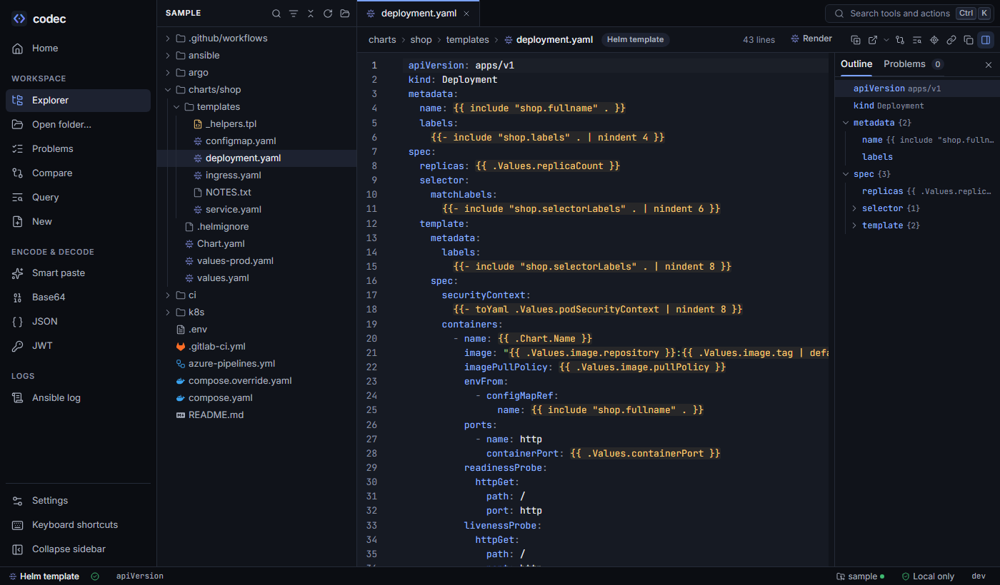
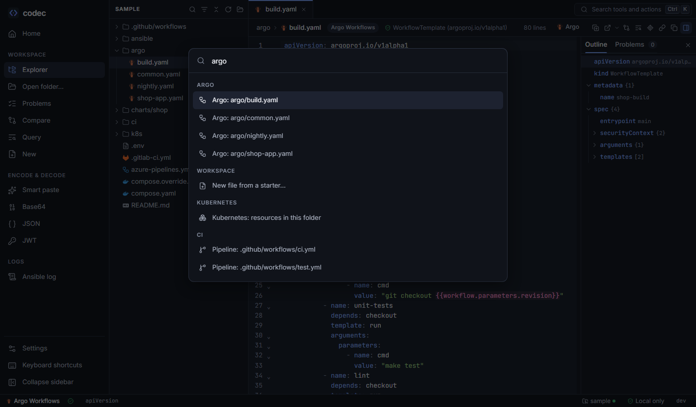

Workspace and editor
Everything in codec starts from an open folder. The explorer lists it, every YAML file is labelled by what it is, and files open in an editor that understands Helm templates, CI expressions and schemas.

The open folder#
Open a folder with Ctrl O, codec serve --root, a recent folder on the home screen, or the sample. One folder is open at a time; opening another closes the first. codec reopens the last folder when the server restarts.
- What is listed. Every file, honouring
.gitignorefiles at any depth..git,node_modulesand similar folders are always skipped, as are binaries and files over 8 MB. Symlinked folders are not followed. A tree is capped at 50,000 files so opening a home folder by mistake stays harmless. - What is changed. Nothing, ever. codec opens files for reading only, through a guard that refuses paths outside the folder (see Security).
- Live updates. codec watches the folder with native file events, or by polling where those don't work (containers, some network drives). New, changed and deleted files show up within about a second, and open tabs reload.
File types#
Each YAML file is classified by its content and name, in the background after the tree appears. The type picks the logo in the explorer, the outline, hover and definitions, the schema and the lens view that can open it.
| Type | Recognised by | Opens in |
|---|---|---|
| Kubernetes | apiVersion + kind of a Kubernetes or CRD object | Resources |
| Helm chart / template / values | Chart.yaml, files under templates/, values files next to a chart | Helm |
| Kustomize | kustomization.yaml | Kustomize build |
| Argo Workflows | argoproj.io Workflow, WorkflowTemplate, ClusterWorkflowTemplate, CronWorkflow (and Sensors that submit workflows) | Argo |
| Argo CD | Application, ApplicationSet, AppProject | Argo |
| GitHub Actions | Files in .github/workflows/, action.yml with runs | Pipeline |
| GitLab CI | .gitlab-ci.yml, files in .gitlab-ci/, jobs with script and stage or image | Pipeline |
| Azure Pipelines | azure-pipelines*.yml, or stages, jobs and steps with task or pool | Pipeline |
| Compose | compose.yaml, docker-compose*.yml, services: documents | Compose |
| Ansible playbook / inventory | Plays with hosts:, task files in roles, YAML inventories | Ansible |
| YAML | Anything else | Editor |
The funnel icon in the explorer filters the tree by type — "show me only the Argo files".
Go to file#
Ctrl P opens a fuzzy finder over every file: type a few letters of each path segment (shdep finds charts/shop/templates/deployment.yaml). Recently opened files come first. It answers in well under 100 ms on a 10,000-file repository.
Tabs#
Files, lens views and tools open as tabs that keep their state while you switch. A file tab refreshes when the file changes on disk; if you have what-if edits, codec asks whether to reload or keep them. A deleted file's tab says so rather than disappearing.
The editor#
YAML files open in a CodeMirror editor with codec's analysis on top. Analysis runs on the server a moment after you stop typing; nothing is saved.
Templates and expressions#
Real-world YAML is full of things that aren't YAML. codec recognises them instead of reporting parse errors, and tints them so they stand out:
| Kind | Examples | Tint |
|---|---|---|
| Template-time — evaluated before the YAML is used | Helm/Go templates {{ .Values.x }}, Jinja {{ var }}, {% if %} | amber |
| Run time — evaluated by the system that runs the file | GitHub ${{ matrix.os }}, Argo {{inputs.parameters.x}}, Azure $(var), $[ ], GitLab $[[ inputs.x ]] | pink |
image: "{{ .Values.image.repository }}:{{ .Values.image.tag | default .Chart.AppVersion }}"
runs-on: ${{ matrix.os }}
args: ["{{inputs.parameters.cmd}}"]Errors in plain English#
Syntax errors are rewritten to say what is wrong and how to fix it, on the line that is actually wrong:
spec:
replicas: 2
selector: ← "selector" is indented under "replicas", which already has a value
Fix: move it left to line up with "replicas", or make replicas a map.Tabs used for indentation, unquoted colons, unclosed quotes and duplicate keys get the same treatment. Each problem appears as a squiggle, in the Problems panel and as a count in the status bar; click it to jump.
Hover and go to definition#
- Hover any key or value for its path, type and value, YAML 1.1 gotchas (
on,0755), schema field docs, and what an expression means. Lens-aware hovers add more: the value a Helm expression rendered with and which values file set it, where an Ansible variable is defined, a Kubernetes Secret value decoded. - Go to definition (F12 or Ctrl+click) follows YAML aliases to anchors, and in lens-aware files much more: Argo
templateRefinto another file, GitLabextendsand!reference, Azure templates, GitHub reusable workflows and actions, Ansible roles and handlers, Composeextends,${VAR}to.env.
Completion and snippets#
Ctrl Space suggests keys and enum values from the file's schema (with their docs), even mid-edit when the YAML doesn't parse. After * it lists anchors. At the start of a key or list item it also offers snippets for the file type — a container, probe or resources block, an Argo DAG task that depends on the last one, a GitHub step or job — and Tab moves between the fields. In an Argo DAG, depends: and template: complete from the tasks and templates around you.
Outline, paths and documents#
- Outline — the key tree, synced with the cursor both ways. Lens-aware files outline what things are: "Container app · nginx:1.27 · 1 port", templates by type with the entrypoint marked, jobs by stage, tasks in execution order. Very large files keep fewer levels so the outline stays useful.
- Path at the cursor — the status bar shows where you are. Click to copy it as dot (
spec.template.spec.containers[0].image), yq, JSONPath, a Helm expression or a--setflag. - Documents — multi-document files get a document switcher, and the outline groups by document.
What-if edits#
You can type in any file. The change affects only what codec shows: the analysis, and every lens that reads the file — a Helm render picks up an edited values file or template, a Compose view an edited override, an Argo graph an edited template. Nothing is written to disk.
- Reset returns to the file on disk.
- Copy content copies the edited text.
- Copy diff copies a patch that
git applyaccepts, keeping CRLF line endings and BOMs as they were.
What-if edits live in the tab until you reset or close it. The dot on the tab shows a file has them.
The command palette#
Ctrl K searches every action: open a folder, lint the workspace, render any chart, open any workflow, pipeline, Compose file or playbook in its view, build a Kustomize overlay, the file actions of the current tab, settings and tools.
